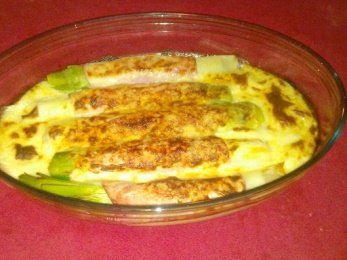

Gratin de poireaux au jambon
Ingrédients
4×
- 8 poireaux
- béchamel (50cl de lait)
- 50 g de parmesan râpé
- 4 tranches de jambon

Préparation
Étape 1
Laver 8 poireaux et raccourcir le vert. Les cuire 15min à l’eau bouillante salée, égoutter et les presser pour extraire l’eau.
Étape 2
Préparer une béchamel (50cl de lait) assaisonnée de sel, poivre et muscade, et y ajouter la moitié de 50 g de parmesan râpé.
Étape 3
Couper 4 tranches de jambon en deux et en envelopper chaque poireau. Ranger dans un plat, napper de sauce et parsemer du reste de parmesan.
Étape 4
Gratiner 10min à 210ºC.
Résumé
8 poireaux
cuire presser
béchamel (50cl de lait)
50 g de parmesan râpé
Préparer
4 tranches de jambon
envelopper
Gratiner 210ºC